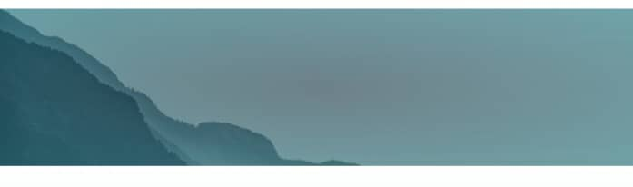

AF SOOMAALI HEERKA
KOOWAAD
Barashada Af soomaaliga kaas oo loogu talo galay ardayda dugsiyada sare ee Norway

AKHRISKA, QORIDA, DHEGAYSIGA IYO HADALKA
Afartan qeybood ee ay ka kooban tahay barashada luuqaddu ayaa muhiim u ah in aad heer ka gaartid afka ama aad ugu gudubtid heerarka kala duwan ee luuqada. Dhegeysiga iyo akhriska waa aqoontii luuqada oo kasbanaysid (input) halka ay qorida iyo hadalka ay noqonaayaan inaad wixii aad baratay aad soo saartid (output)
